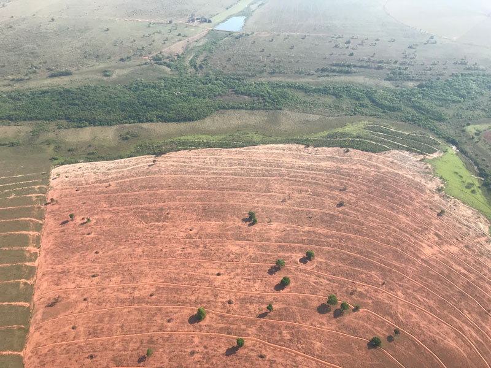
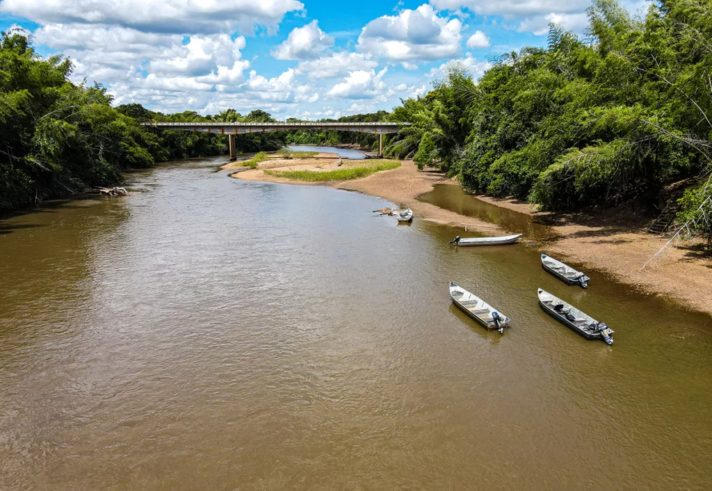
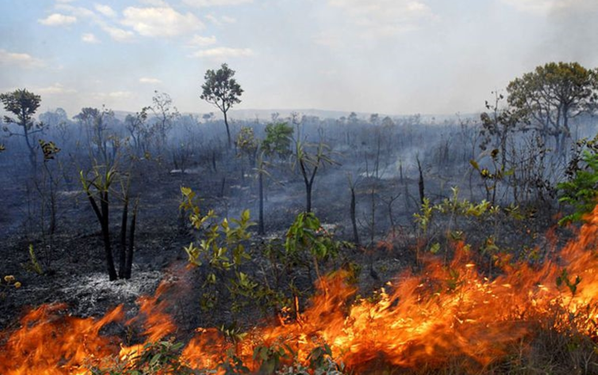

Impactos Ambientais
Fonte: https://images.app.goo.gl/YPjeUnH27XAQRGz88
O Pantanal, vasto e biodiverso, enfrenta desafios monumentais devido aos impactos ambientais causados pela atividade humana. O desmatamento desenfreado para expansão agrícola e pecuária vem reduzindo rapidamente as áreas naturais, comprometendo habitats essenciais para uma variedade única de vida selvagem.

Fonte: https://images.app.goo.gl/obeuPtrfpApEkg6w6
Além disso, a poluição das águas proveniente de resíduos industriais, agrotóxicos e esgotos urbanos contamina os rios e lagoas, ameaçando a saúde dos ecossistemas aquáticos e, consequentemente, de toda a cadeia alimentar. As mudanças climáticas também exercem pressão adicional, alterando padrões de chuva e temperatura e impactando a hidrologia do Pantanal, essencial para suas características únicas de inundação sazonal.

Fonte: https://images.app.goo.gl/55Pbnz9VXB3tAf3o9s
Os incêndios frequentes, muitas vezes causados por atividades humanas como queimadas descontroladas, devastam vastas áreas de vegetação nativa, liberando grandes quantidades de carbono na atmosfera e colocando em risco a fauna adaptada às condições específicas do bioma. Além disso, o turismo não sustentável e o desenvolvimento desordenado de infraestrutura, como barragens e estradas, fragmentam ainda mais os habitats naturais e perturbam a vida selvagem.